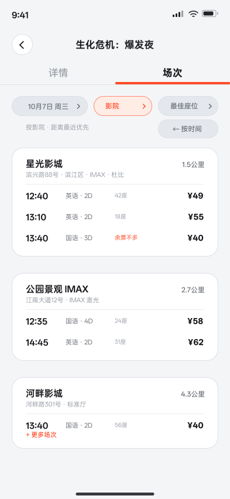
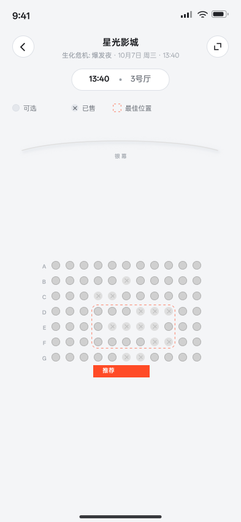
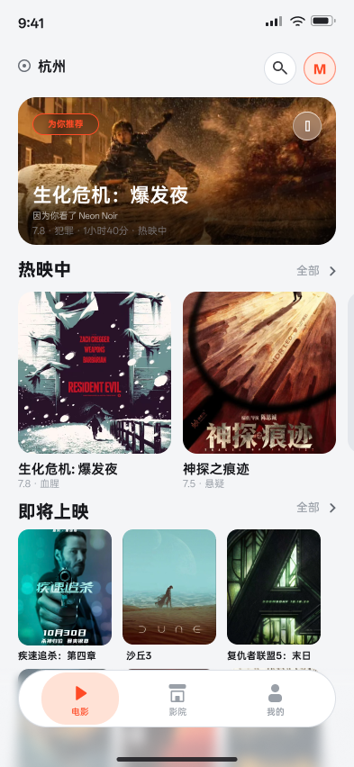

MOVA.
电影购票与观影体验：从查看场次、选定座位，到获取电子票——一条完整的购票体验。


项目概述 Overview
01MOVA 是一款电影发现与购票应用，覆盖观影前的完整决策与交易链路：从选城市、看热映 / 即将上映，到影片详情、选场次、选座、下单支付，最终获得一张可直接入场的电子票。
页面内容依据现有界面与已确认资料撰写；未提供的用户研究、竞品与成果数据标为 TODO，不虚构。
背景与场景 Background & Context
02看电影的决策往往发生在移动端、且时间碎片化：用户要在一屏里快速判断「看什么、去哪家、几点、坐哪」再完成支付。体验的关键不只是界面好看，而是把这条链路做得短、清晰、可信。
素材待补充：用户研究 / 场景访谈（未提供，暂不编造）设计问题与目标 Problem & Goals
03购票环节的典型摩擦在于「信息过载」与「决策后置」：场次多、影院多、价格 / 距离 / 格式差异大；座位又必须在支付前一次性选好。设计需要让用户在尽量少的步骤里做出有把握的选择，并对结果（价格、座位、票据）有确定的预期。
- 清晰场次在价格、格式、距离、余票之间可快速比较，降低选择成本。
- 可信选座状态（可选 / 已售 / 推荐）与结算金额清晰可见，减少支付前的不确定。
- 闭环从选座到电子票一气呵成，购票完成后票据即刻可用。
产品定位 Positioning
04MOVA 把「发现」与「交易」放在同一条流里：先以海报与评分激发兴趣，再在同一路径内完成场次、选座与支付。用户在浏览影片的过程中即可进入购票，不必在多个页面间跳转。
素材待补充：竞品分析 / 定位论证（未提供）信息架构 Information Architecture
05底部三个 Tab：电影 · 影院 · 我的。电影作为主入口承载发现与购票主链路；「我的」聚合订单与个人资产。
电影 Movie
- 城市选择
- 热映 / 即将上映
- 影片详情
- 场次
影院 Cinema
- 影院列表
- 影院详情
- （素材待补充）
我的 Me
- 想看 / 已看
- 我的订单
- 优惠券
辅助 System
- 通知
- 支付方式
- 关于 MOVA
主流程与影片详情 Main Flow & Movie Detail
06完整链路：启动 → 电影首页 → 影片详情 → 场次 → 选座 → 确认订单 → 支付 → 电子票 → 我的订单。影片详情页承接「要不要看」到「去看哪一场」的转折。
影片详情为长页面（含海报、简介、评分、演职员、剧照与「查找场次」入口）。下方可滚动查看完整长图，或点「查看完整长图」在新窗口打开原图；移动端同样可上下滚动查看。


筛选场次 Sessions
07场次提供两种查找方式：按时段（时间优先，快速找最近可看的场）与按影院（影院优先，锁定想去的影院再选时间）。两者都是「场次筛选」的不同视角，行内组合 2D / IMAX / 4D 格式、价格、距离与余票提示。


选座交互 Seat Selection
08 · 重点选座是这条链路的核心决策。界面用银幕弧线建立空间感，用图例区分可选 / 已售 / 最佳位置，并给出「推荐」与已选反馈，让用户在支付前对「坐哪」有把握。


- 可读性用颜色与图例区分可选 / 已售 / 推荐，减少误选与重复尝试。
- 引导「推荐」把最佳座位前置为默认最优解，降低决策成本。
- 确认感已选状态即时反馈，让用户在进入结算前确认无误。
UI 视觉系统 UI Visual System
09MOVA 以橙红作为主操作色（购票 / 主按钮），浅灰白底配圆角卡片，海报使用深色大图拉开层级；评分、标签用中性灰与状态色区分。以下为界面观察，原始规范待你提供后精确化。


确认订单 · 支付 · 电子票 Checkout · Payment · E-Ticket
10确认订单页把「看什么、哪家、几号厅、几点、哪两个座」一次性讲清，并以优惠券直接体现价格变化（合计 ¥91 → 用券后 ¥81）。支付完成后进入电子票页，含条形码与订单号，票据即可入场。


- 透明费用与优惠在支付前一次讲清，减少「最后一步才发现」的挫败。
- 收尾成功页以电子票作为「已完成」的实体凭证，强化闭环与信任。
交互原型 Interactive Prototype
11MOVA 的交互原型尚未提供可访问链接。拿到链接或 Figma 后，将在此提供内嵌预览与外链入口。
素材待补充：交互原型链接（Figma / 在线）——到位后接入内嵌 + 外链总结 Reflection
12MOVA 呈现了一条完整的购票体验：以发现激发兴趣，用场次与选座把选择讲清，再以订单、支付与电子票完成闭环。本案例交付现有材料可支持的高保真界面与主流程；研究成果与效果数据待补。
把「看什么」到「坐哪、怎么付、怎么入场」讲成一条清晰的路。
成果指标、用户测试与竞品结论：TODO —— 待素材补充后再写，不虚构。